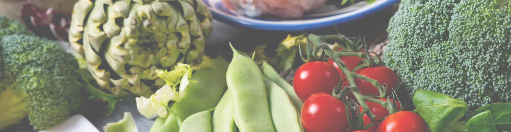

I køkkenet på Frederiksborg Gymnasium arbejder vi på at lave bæredygtige menuplaner, ud fra de officielle kostråd og med udgangspunkt i FN´s verdensmål. De skal både være sunde og sørge for at du kan koncentrere dig hele dagen, men også være bæredygtige, så vi kan sikre de fremtidige generationer.
